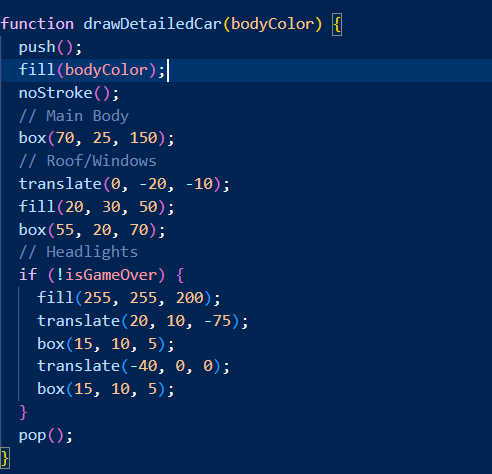
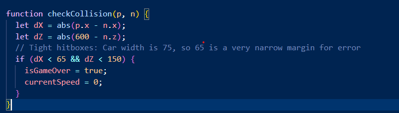

A project by Sreyas P and Sarthak P.
"3D Racer: Insane Mode" is a endless racing game where you dodge cars and try to get the highest score possible. We wanted to make a game which is fun and simple but also challenging. The 3d view adds depth and creates a unique perspective which other games like this don't have. We developed the game using p5js.
WASD and Arrow Keys.
This method is like a reusable method for our cars. Instead of writing out the long instructions for drawing a 3D car over and over again, we wrote them once and added a method called bodyColor. This method is the parameter. When we want a red car for the player, we put "red" into that method. When we want a blue car for traffic, we put "blue" in.

Our project features a custom method called checkCollision(p, n) that acts for the game’s physics. This method takes two specific objects—the player and an NPC—and calculates the distance between their 3D coordinates. After performing the math, it returns a Boolean value: true if a collision is detected, or false if the path is clear. Why it was useful:By using a return value, we successfully separated the "math logic" from the "game action." This made our code much more organized; the main drawing loop doesn't need to understand the complex geometry of a hit-box, it only needs the "yes or no" answer provided by the return. This method allowed us to tweak the game to increase difficulty as the player accelerates.
We had used Gemini to create pieces of the project structure to help us create the fully working project. We had used Gemini to create complex game physics code, and all of the time consuming and tedious code for us. With using LLMs, we also have the oppurtunity to learn how to integrate and adapt to LLMs into our software development process. But we had also learned that, it also gives you the oppurtunity to explore new programming concepts such as back-end development and game design.